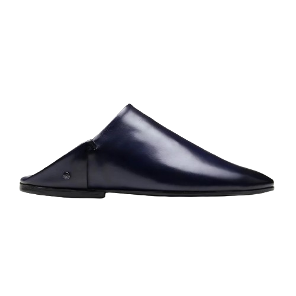

The Moroccan mule, known as "Belgha," has a rich history deeply intertwined with the cultural and economic fabric of Morocco. Originating in the rugged terrains of the Atlas Mountains, the Belgha is a sturdy and surefooted breed of mule that played a crucial role in Morocco's history. Historically, these mules served as indispensable pack animals, carrying goods across challenging mountainous landscapes and connecting remote regions. Their resilience and adaptability made them essential companions for Berber tribes and traders navigating the diverse Moroccan terrain. Beyond their utilitarian role, Belghas became cultural symbols, appearing in local folklore and traditions. Today, while modern transportation has evolved, the legacy of the Moroccan mule endures, and these animals remain emblematic of Morocco's enduring connection to its storied past.
